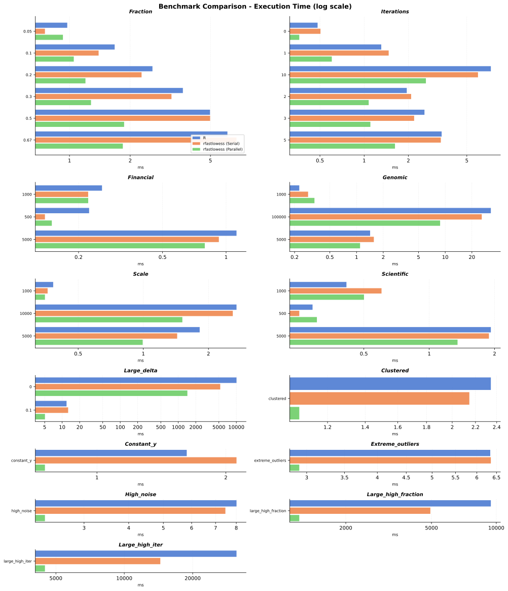

Benchmarks
These are shared reference results from the R binding and Rust GPU backend, not separately measured timings for this binding. Timings depend on hardware, drivers, thread availability, and workload; crossover points are observations from this run, not universal thresholds.
R and CPU Comparison

The plot and table use mean timings. Parentheses
show speedup relative to stats::lowess; values above 1 indicate faster
execution than R.
| Scenario | stats::lowess |
rfastlowess (serial) | rfastlowess (parallel) |
|---|---|---|---|
clustered |
2.34 ms |
2.15 ms (1.1×) |
1.07 ms (2.2×) |
constant_y |
1.62 ms |
2.12 ms (0.8×) |
0.76 ms (2.1×) |
extreme_outliers |
6.34 ms |
6.35 ms (1.0×) |
2.91 ms (2.2×) |
financial_1000 |
0.26 ms |
0.22 ms (1.2×) |
0.22 ms (1.2×) |
financial_500 |
0.22 ms |
0.14 ms (1.6×) |
0.15 ms (1.5×) |
financial_5000 |
1.12 ms |
0.92 ms (1.2×) |
0.79 ms (1.4×) |
fraction_0.05 |
0.97 ms |
0.76 ms (1.3×) |
0.93 ms (1.1×) |
fraction_0.1 |
1.67 ms |
1.39 ms (1.2×) |
1.05 ms (1.6×) |
fraction_0.2 |
2.58 ms |
2.28 ms (1.1×) |
1.20 ms (2.1×) |
fraction_0.3 |
3.65 ms |
3.20 ms (1.1×) |
1.28 ms (2.9×) |
fraction_0.5 |
4.97 ms |
4.98 ms (1.0×) |
1.87 ms (2.7×) |
fraction_0.67 |
6.07 ms |
6.73 ms (0.9×) |
1.84 ms (3.3×) |
genomic_1000 |
0.23 ms |
0.28 ms (0.8×) |
0.34 ms (0.7×) |
genomic_100000 |
32.71 ms |
25.84 ms (1.3×) |
8.76 ms (3.7×) |
genomic_5000 |
1.42 ms |
1.57 ms (0.9×) |
1.10 ms (1.3×) |
high_noise |
8.01 ms |
7.46 ms (1.1×) |
2.33 ms (3.4×) |
iterations_0 |
0.48 ms |
0.50 ms (1.0×) |
0.36 ms (1.3×) |
iterations_1 |
1.31 ms |
1.47 ms (0.9×) |
0.60 ms (2.2×) |
iterations_10 |
7.29 ms |
5.96 ms (1.2×) |
2.63 ms (2.8×) |
iterations_2 |
1.95 ms |
2.09 ms (0.9×) |
1.07 ms (1.8×) |
iterations_3 |
2.57 ms |
2.19 ms (1.2×) |
1.10 ms (2.3×) |
iterations_5 |
3.37 ms |
3.33 ms (1.0×) |
1.62 ms (2.1×) |
large_delta_0 |
10 067.77 ms |
5 279.61 ms (1.9×) |
1 434.48 ms (7.0×) |
large_delta_0.1 |
11.90 ms |
12.68 ms (0.9×) |
5.05 ms (2.4×) |
large_high_fraction |
9 434.85 ms |
4 940.71 ms (1.9×) |
1 216.33 ms (7.8×) |
large_high_iter |
31 189.44 ms |
14 409.17 ms (2.2×) |
4 475.26 ms (7.0×) |
scale_1000 |
0.38 ms |
0.36 ms (1.1×) |
0.35 ms (1.1×) |
scale_10000 |
2.69 ms |
2.59 ms (1.0×) |
1.51 ms (1.8×) |
scale_5000 |
1.82 ms |
1.43 ms (1.3×) |
0.99 ms (1.8×) |
scientific_1000 |
0.42 ms |
0.60 ms (0.7×) |
0.50 ms (0.8×) |
scientific_500 |
0.29 ms |
0.25 ms (1.2×) |
0.30 ms (1.0×) |
scientific_5000 |
1.92 ms |
1.88 ms (1.0×) |
1.35 ms (1.4×) |
At small sizes, fixed per-call overhead can dominate, and parallel
execution is not always faster. The large wide-window workload reaches
7.8× parallel speedup; the high-iteration workload reaches 2.2×
serial speedup. Allowing default delta reduces the reference workload
from approximately 10.07 s to 11.90 ms.
CPU-Parallel versus GPU
The first measured input size where GPU median time is below CPU-parallel median time:
| Fraction | 0 robustness iterations | 3 robustness iterations |
|---|---|---|
0.1 |
50 000 |
50 000 |
0.3 |
50 000 |
50 000 |
0.5 |
25 000 |
25 000 |
Selected median timings, with GPU speedup defined as CPU-parallel time divided by GPU time:
| n | Fraction | Iterations | CPU-parallel | GPU | GPU speedup |
|---|---|---|---|---|---|
10 000 |
0.5 |
3 |
4.66 ms |
6.31 ms |
0.74× |
50 000 |
0.5 |
0 |
7.69 ms |
2.64 ms |
2.92× |
100 000 |
0.5 |
3 |
52.40 ms |
24.62 ms |
2.13× |
250 000 |
0.3 |
3 |
96.33 ms |
49.14 ms |
1.96× |
1 000 000 |
0.5 |
3 |
1 118.35 ms |
236.47 ms |
4.73× |
The GPU is slower for the selected 10 000-point case, but approximately 4.7× faster for the million-point case. Wider windows increase per-query work and can make GPU execution worthwhile at smaller input sizes.
The crossover is the first sampled GPU win, not a guarantee that every larger input favors the GPU. At fraction 0.1, CPU wins again at 100K for both iteration counts.
Full crossover sweep with text charts
fraction=0.1 iterations=0 - first GPU win: 50K
n CPU (med) GPU (med) speedup chart
-------- ---------- ---------- -------- ------------------------
1K 0.06 ms 1.08 ms 0.06× CPU ▒▒▒▒▒▒▒▒▒▒▒▒▒▒▒▒▒▒▒
2K 0.27 ms 0.97 ms 0.27× CPU ▒▒▒▒▒▒▒▒▒▒▒▒▒▒▒
5K 0.21 ms 0.87 ms 0.24× CPU ▒▒▒▒▒▒▒▒▒▒▒▒▒▒▒
10K 0.31 ms 1.73 ms 0.18× CPU ▒▒▒▒▒▒▒▒▒▒▒▒▒▒▒▒
25K 0.78 ms 2.03 ms 0.38× CPU ▒▒▒▒▒▒▒▒▒▒▒▒
50K 2.78 ms 2.20 ms 1.26× GPU █ ◀ crossover
100K 5.52 ms 6.71 ms 0.82× CPU ▒▒▒▒
250K 23.10 ms 15.10 ms 1.53× GPU ███
500K 42.44 ms 35.62 ms 1.19× GPU █
1M 89.78 ms 62.94 ms 1.43× GPU ██
fraction=0.3 iterations=0 - first GPU win: 50K
n CPU (med) GPU (med) speedup chart
-------- ---------- ---------- -------- ------------------------
1K 0.11 ms 0.74 ms 0.15× CPU ▒▒▒▒▒▒▒▒▒▒▒▒▒▒▒▒▒
2K 0.30 ms 0.78 ms 0.38× CPU ▒▒▒▒▒▒▒▒▒▒▒▒
5K 0.36 ms 0.83 ms 0.43× CPU ▒▒▒▒▒▒▒▒▒▒▒
10K 0.68 ms 1.48 ms 0.46× CPU ▒▒▒▒▒▒▒▒▒▒▒
25K 1.60 ms 1.83 ms 0.88× CPU ▒▒
50K 5.14 ms 2.40 ms 2.14× GPU ██████ ◀ crossover
100K 9.33 ms 5.69 ms 1.64× GPU ███
250K 30.04 ms 16.16 ms 1.86× GPU ████
500K 58.62 ms 34.27 ms 1.71× GPU ████
1M 126.25 ms 69.38 ms 1.82× GPU ████
fraction=0.5 iterations=0 - first GPU win: 25K
n CPU (med) GPU (med) speedup chart
-------- ---------- ---------- -------- ------------------------
1K 0.23 ms 0.92 ms 0.25× CPU ▒▒▒▒▒▒▒▒▒▒▒▒▒▒▒
2K 0.30 ms 0.86 ms 0.35× CPU ▒▒▒▒▒▒▒▒▒▒▒▒▒
5K 0.51 ms 1.56 ms 0.32× CPU ▒▒▒▒▒▒▒▒▒▒▒▒▒▒
10K 1.10 ms 1.46 ms 0.75× CPU ▒▒▒▒▒
25K 2.36 ms 1.85 ms 1.27× GPU █ ◀ crossover
50K 7.69 ms 2.64 ms 2.92× GPU ██████████
100K 15.81 ms 5.31 ms 2.98× GPU ██████████
250K 37.61 ms 17.10 ms 2.20× GPU ██████
500K 80.02 ms 35.82 ms 2.23× GPU ██████
1M 231.02 ms 70.12 ms 3.29× GPU ███████████
fraction=0.1 iterations=3 - first GPU win: 50K
n CPU (med) GPU (med) speedup chart
-------- ---------- ---------- -------- ------------------------
1K 0.26 ms 5.04 ms 0.05× CPU ▒▒▒▒▒▒▒▒▒▒▒▒▒▒▒▒▒▒▒
2K 1.09 ms 4.71 ms 0.23× CPU ▒▒▒▒▒▒▒▒▒▒▒▒▒▒▒
5K 1.26 ms 4.80 ms 0.26× CPU ▒▒▒▒▒▒▒▒▒▒▒▒▒▒▒
10K 1.33 ms 5.72 ms 0.23× CPU ▒▒▒▒▒▒▒▒▒▒▒▒▒▒▒
25K 3.31 ms 6.55 ms 0.51× CPU ▒▒▒▒▒▒▒▒▒▒
50K 8.19 ms 8.04 ms 1.02× GPU ◀ crossover
100K 14.35 ms 16.86 ms 0.85× CPU ▒▒▒
250K 58.75 ms 43.92 ms 1.34× GPU ██
500K 113.73 ms 86.19 ms 1.32× GPU ██
1M 304.22 ms 212.73 ms 1.43× GPU ██
fraction=0.3 iterations=3 - first GPU win: 50K
n CPU (med) GPU (med) speedup chart
-------- ---------- ---------- -------- ------------------------
1K 0.51 ms 4.96 ms 0.10× CPU ▒▒▒▒▒▒▒▒▒▒▒▒▒▒▒▒▒▒
2K 1.33 ms 4.70 ms 0.28× CPU ▒▒▒▒▒▒▒▒▒▒▒▒▒▒
5K 1.80 ms 5.71 ms 0.31× CPU ▒▒▒▒▒▒▒▒▒▒▒▒▒
10K 2.77 ms 6.09 ms 0.45× CPU ▒▒▒▒▒▒▒▒▒▒▒
25K 5.73 ms 7.33 ms 0.78× CPU ▒▒▒▒
50K 15.03 ms 9.70 ms 1.55× GPU ███ ◀ crossover
100K 27.16 ms 23.23 ms 1.17× GPU █
250K 96.33 ms 49.14 ms 1.96× GPU █████
500K 201.04 ms 113.25 ms 1.77× GPU ████
1M 673.32 ms 192.87 ms 3.49× GPU ████████████
fraction=0.5 iterations=3 - first GPU win: 25K
n CPU (med) GPU (med) speedup chart
-------- ---------- ---------- -------- ------------------------
1K 0.80 ms 4.57 ms 0.17× CPU ▒▒▒▒▒▒▒▒▒▒▒▒▒▒▒▒▒
2K 1.34 ms 5.03 ms 0.27× CPU ▒▒▒▒▒▒▒▒▒▒▒▒▒▒
5K 2.43 ms 5.95 ms 0.41× CPU ▒▒▒▒▒▒▒▒▒▒▒▒▒
10K 4.66 ms 6.31 ms 0.74× CPU ▒▒▒▒▒
25K 9.19 ms 7.37 ms 1.25× GPU █ ◀ crossover
50K 23.77 ms 12.99 ms 1.83× GPU ████
100K 52.40 ms 24.62 ms 2.13× GPU ██████
250K 123.11 ms 55.82 ms 2.21× GPU ██████
500K 394.26 ms 139.10 ms 2.83× GPU █████████
1M 1118.35 ms 236.47 ms 4.73× GPU ███████████████████End-to-End GPU Fit
Recorded wall-clock timings for the complete Rust GPU workload:
| n | Mean | Median | Minimum | Maximum |
|---|---|---|---|---|
1 000 |
6.091 ms |
6.512 ms |
4.710 ms |
7.170 ms |
5 000 |
5.162 ms |
5.136 ms |
4.344 ms |
5.957 ms |
10 000 |
6.548 ms |
6.606 ms |
4.904 ms |
8.548 ms |
50 000 |
7.565 ms |
7.376 ms |
7.172 ms |
8.352 ms |
100 000 |
14.170 ms |
14.396 ms |
12.213 ms |
16.029 ms |
500 000 |
63.544 ms |
63.831 ms |
61.600 ms |
64.527 ms |
1 000 000 |
141.224 ms |
141.413 ms |
137.718 ms |
143.109 ms |
Small workloads have a substantial fixed setup cost. Beyond those sizes, runtime grows with the amount of fitting work.
Host/Device Transfer Overhead
Mean transfer latencies and effective bandwidth from the isolated transfer benchmark. Round-trip bandwidth uses the combined uploaded/downloaded bytes divided by mean round-trip time:
Transfer measurements used an Intel Arc 140V integrated GPU (16 GB) with the Vulkan backend.
| n | Upload | Download | Round trip | Effective bandwidth |
|---|---|---|---|---|
1 000 |
0.361 ms |
0.399 ms |
0.760 ms |
0.026 GB/s |
5 000 |
0.404 ms |
0.403 ms |
0.807 ms |
0.124 GB/s |
10 000 |
0.440 ms |
0.506 ms |
0.946 ms |
0.212 GB/s |
50 000 |
0.426 ms |
0.326 ms |
0.751 ms |
1.331 GB/s |
100 000 |
0.730 ms |
0.853 ms |
1.583 ms |
1.263 GB/s |
500 000 |
1.922 ms |
2.212 ms |
4.134 ms |
2.419 GB/s |
1 000 000 |
3.662 ms |
4.295 ms |
7.957 ms |
2.514 GB/s |
Fixed transfer latency dominates the smaller buffers; effective bandwidth reaches approximately 2.5 GB/s for the largest recorded transfer. These measurements isolate transfer operations, so they should not be subtracted directly from timings collected by a different fit benchmark.
The transfer-fraction calculation used a CPU timing as its reference, not an end-to-end GPU measurement. Its 216.4% fraction and negative kernel time are therefore invalid and omitted here.